Manual do Carino PACS
O Carino PACS é um gateway DICOM e um equipamento de continuidade: recebe estudos, roteia e encaminha, publica o acervo por Query/Retrieve e DICOMweb, e sustenta o setor de imagem quando o PACS ou o RIS param de responder. Este manual cobre a instalação, o modelo de segurança, cada serviço e os limites reais do software.
Todas as capturas deste manual são de uma instância real deste software com estudos inventados para a foto. Nenhum paciente aparece aqui.
Conteúdo
1. O que é e qual papel ele cumpre
O Carino PACS fica entre os equipamentos que geram imagem e os sistemas que guardam ou leem essas imagens. Ele não tenta substituir o seu arquivo: ele quer ser a peça que liga os dois e a que continua de pé quando alguma das outras cai.
São dois papéis, e vale distingui-los porque é isso que define quais serviços você liga:
- Gateway permanente. Recebe por C-STORE, grava em disco por paciente/estudo/série, encaminha para um ou vários destinos conforme regras, anonimiza a cópia que sai quando você pede, e publica o que tem por Query/Retrieve (para equipamento antigo) e por DICOMweb (para visualizadores modernos).
- Rede de segurança. Se o PACS principal para de responder, ele pode ativar a própria Modality Worklist para os técnicos continuarem examinando, segurar o que chega durante a queda e encaminhar automaticamente quando o principal volta. Também recebe pedidos HL7 por MLLP — ou digitados à mão — quando quem caiu foi o RIS.
Tudo é definido em um único config.json e tudo roda sem interface gráfica. O painel
web é conveniente, não obrigatório.
Portas padrão
| Serviço | Porta | Protocolo |
|---|---|---|
| Receptor (Storage SCP) | 11112 | DICOM / DIMSE |
| Impressão virtual | 11113 | DICOM Print |
| Modality Worklist | 11114 | DICOM C-FIND |
| Query/Retrieve | 11115 | DICOM C-FIND/C-MOVE/C-GET |
| RIS de emergência | 2575 | HL7 sobre MLLP |
| Painel web + DICOMweb | 8042 | HTTP |
Por que 11112 e não 104. A porta registrada do DICOM é a 104, que em Linux e
macOS é privilegiada e exige rodar como root. O padrão aqui evita isso. Configure os
equipamentos de acordo, ou publique 104 para 11112 no contêiner ou no
firewall.
2. Primeiros passos
Escolha a forma de rodar
| Forma | Para qual caso | Volta sozinho após queda de energia |
|---|---|---|
| App de desktop (bandeja) | Uma estação com alguém sentado na frente: uma sala, um consultório, um teste. | Só se você ligar «iniciar no login» |
| Docker / Podman | Um servidor, ou qualquer máquina onde você queira isolar e mover tudo junto. | Sim (restart: unless-stopped) |
| Serviço systemd | A caixinha permanente do setor de imagem, sem ninguém logado. | Sim |
App de desktop
Baixe o pacote do seu sistema na página de releases e abra. Ele fica na bandeja do sistema; ao clicar, abre o painel. Como ainda não é assinado digitalmente, Windows e macOS avisam na primeira execução: a página inicial traz o passo a passo para abrir mesmo assim.
Docker
git clone https://github.com/MiguelCarino/Carino-PACS
cd Carino-PACS
mkdir -p data && sudo chown -R $(id -u):$(id -g) data
docker compose up -d
docker compose logs -f pacsA primeira inicialização gera e imprime um token de acesso no log. Abra
http://127.0.0.1:8042/ e cole o token quando o painel pedir. Tudo — configuração,
estudos, logs, índice — fica em ./data, que é o que você precisa incluir no backup.
A falha mais comum na primeira execução é ./data pertencer ao root: o
contêiner nunca roda como root e morre com EACCES. Se o seu usuário não for o 1000,
coloque PACS_UID e PACS_GID em um arquivo .env e
reconstrua. Em hosts com SELinux (Fedora, RHEL, Rocky), o sufixo :z no volume não é
enfeite: sem ele o bind mount fica sem permissão de escrita mesmo com as permissões aparentemente
corretas.
Serviço systemd (Linux)
git clone https://github.com/MiguelCarino/Carino-PACS.git
cd Carino-PACS
sudo packaging/systemd/install.shO instalador cria o usuário de sistema carino-pacs, copia o código para
/opt/carino-pacs, prepara /var/lib/carino-pacs e deixa a unit
instalada… e não inicia o serviço. Não é esquecimento: iniciar um PACS abre portas
que aceitam dados de pacientes, e essa decisão se toma depois de ler a configuração, não antes.
Edite /var/lib/carino-pacs/config.json e então:
sudo systemctl enable --now carino-pacs
systemctl status carino-pacs
journalctl -u carino-pacs -fRodar o instalador de novo atualiza o código sem tocar no seu config.json.
Onde ficam os dados
| Forma | Diretório |
|---|---|
| Desktop / CLI | ~/CarinoPACS/ |
| Docker | /data dentro do contêiner → ./data no host |
| systemd | /var/lib/carino-pacs/ (modo 0750) |
O config.json fica junto dos dados, e não em /etc, porque os
caminhos relativos do config ("./received", "./logs",
"./index.db") são resolvidos em relação ao diretório do próprio arquivo de
configuração. Um config em /etc espalharia estudos de pacientes pelo /etc.
Primeira execução, na ordem
- Escolha os serviços. Tudo vem desligado. O assistente do painel pergunta o que esta máquina deve rodar; ligue só isso.
- Cadastre os destinos (nome, host, porta, AE title) na aba Destinos de Configuração — é a aba com que ela abre.
- Teste a conectividade com C-ECHO antes de mover uma única imagem:
./run.sh echo --name "PACS do hospital". Se o C-ECHO não passa, o problema não é o Carino: é rede, firewall ou AE title. - Aponte um equipamento para cá com o AE title, o IP e a porta do receptor, e envie um estudo de teste.
- Olhe a aba Registro de Atividade. Se algo falhar, aparece ali; este software prefere gritar a falhar em silêncio.
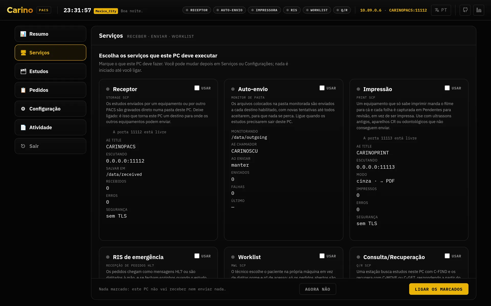
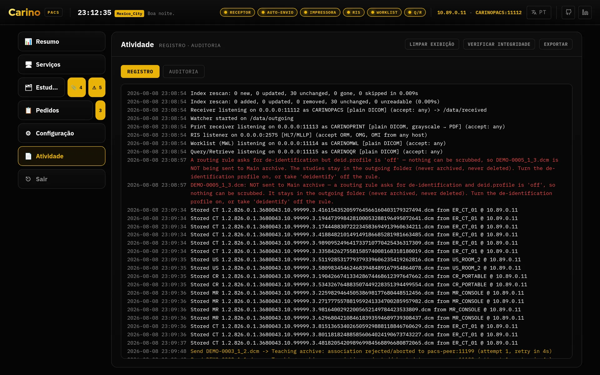
Sem interface gráfica
./run.sh init # cria config.json e as pastas
./run.sh init --token # e ainda gera o web.auth_token
./run.sh serve # painel em http://127.0.0.1:8042
./run.sh receive # só o receptor
./run.sh send # só o monitoramento de pasta / encaminhamento
./run.sh qr # só Query/Retrieve
./run.sh mwl # só a worklist
./run.sh ris # só o receptor de pedidos HL7
./run.sh print # só a impressora virtual
./run.sh echo --host 10.0.0.5 --port 104 --aet PACSREMOTOTodos os comandos aceitam -c / --config <caminho>. No Windows, run.ps1.
3. O modelo de segurança e a regra do token
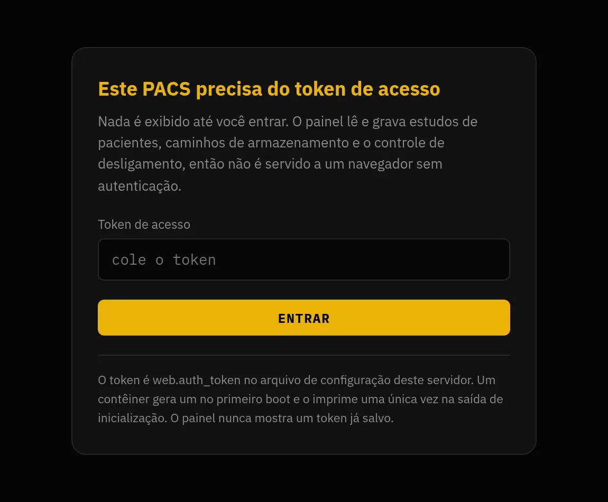
Comecemos pelo que importa: o painel é a chave do acervo. Quem abre o painel pode ler todos os estudos armazenados, baixar os arquivos DICOM, mudar qualquer configuração, iniciar e parar serviços, apagar estudos e desligar o servidor. De fábrica há um único segredo compartilhado e quem o tem pode tudo: os perfis são opcionais e ficam desligados até você ativá-los. Ao ativar, cada pessoa entra como ela mesma, com as próprias permissões, a própria visão dos identificadores do paciente e o próprio nome na auditoria; o token compartilhado continua funcionando como administrador, então nada que já o utilize deixa de funcionar.

*** onde teria aparecido.As mesmas permissões desenham a navegação. Uma linha da lateral aparece se o perfil tiver alguma
das permissões que as abas dela pedem, e depois cada aba é conferida por conta própria: um
Radiologista, que tem routing.read e não tem config.read, abre
Configuração e enxerga Destinos e Rotas, mas nenhuma aba
Configurações, que é onde ficam o token da API e o desligamento do servidor. A
Recepção, que não tem nenhuma das três permissões, não vê a linha Configuração.
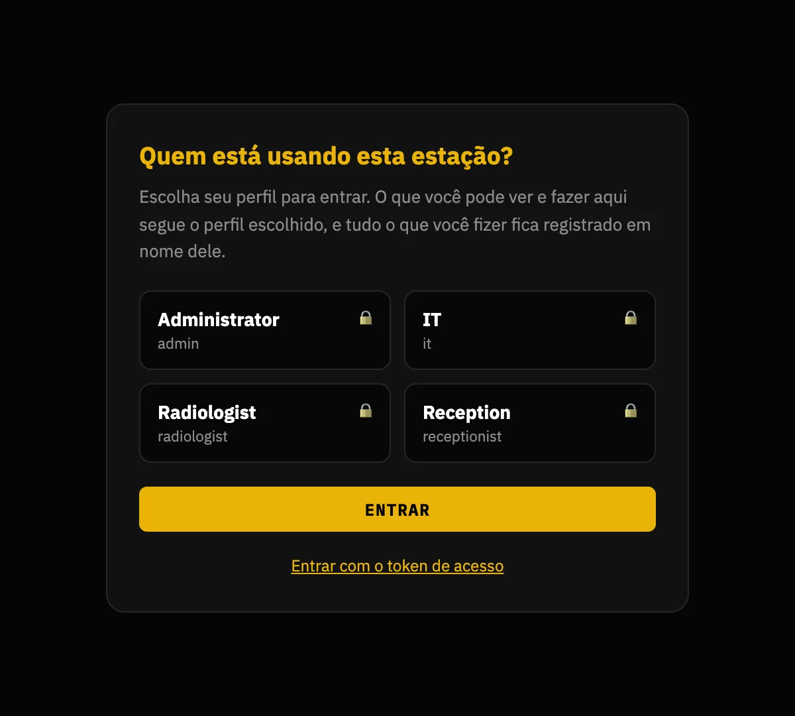
users.list_profiles estiver ligado: publicar a lista de pessoal para quem alcançar a porta é uma divulgação de verdade, e a decisão é sua. O token continua funcionando, dobrado embaixo, porque é a volta para dentro quando alguém se tranca fora.A regra
web.auth_token vazio só é aceito enquanto web.host for
loopback. Se web.host for qualquer outra coisa — 0.0.0.0, um IP da
rede, um nome — e o token estiver vazio, o servidor se recusa a iniciar. Essa
recusa é um recurso do programa, não um erro para contornar.
O motivo é concreto. Sem autenticação, em 127.0.0.1, o sistema operacional é o
controle de acesso: só um processo da própria máquina consegue falar com a API. Isso se defende.
Mas web.host é configurável pelo operador, e no dia em que alguém troca para
0.0.0.0 para «acessar do outro PC» — com pressa, numa terça-feira, sem pensar em
segurança — essa mesma API entrega a qualquer vizinho de rede a lista de estudos, os caminhos de
armazenamento, os bytes DICOM e o /api/shutdown. A regra existe porque essa mudança
leva dez segundos e as consequências duram anos.
Todo contêiner está sempre nesse caso: um contêiner publica em
0.0.0.0 por construção. Por isso a imagem gera um token de 256 bits na primeira
inicialização se você não fornecer um — e o imprime. O que ela nunca faz é gerar em
silêncio: um segredo que ninguém vê é um segredo que ninguém rotaciona.
Como gerar e como enviar o token
./run.sh init --token # grava no config.json
python3 -c "import secrets; print(secrets.token_urlsafe(32))"
openssl rand -base64 32O servidor aceita a credencial de três formas:
Authorization: Bearer <token>X-Carino-Token: <token>- um cookie de sessão emitido por
POST /api/login
O cookie existe para o painel pedir o token uma vez em vez de guardá-lo em JavaScript, onde qualquer XSS e qualquer extensão do navegador conseguem ler. O cookie não carrega o token: carrega um HMAC calculado com um segredo gerado na inicialização e mantido só em memória. Por isso um restart desloga todo mundo — é a troca certa para um equipamento de operador único: nada guardado em disco para vazar, e no pior caso digita-se o token de novo uma vez por plantão.
O painel fala HTTP puro. Ele não tem TLS próprio. Se você publicar além do loopback, coloque atrás de um proxy reverso que termine HTTPS. Um token trafegando em HTTP sem criptografia numa rede compartilhada é um token que você já entregou.
O lado DICOM
allowed_aets— lista branca de AE titles que podem se associar. Vazia significa «aceita qualquer um». É um filtro útil, não autenticação: o DICOM não autentica quem chama.- DICOM-TLS — disponível dos dois lados e de forma independente, inclusive TLS
mútuo com certificado de cliente. Usa a mesma porta: um par em texto claro não conversa
com um receptor TLS, nem o contrário. TLS criptografa e autentica o transporte, não a
aplicação: combine com
allowed_aetsou com certificados de cliente para ter controle de acesso de verdade. - Firewall — os listeners DICOM escutam em
0.0.0.0por padrão (embora todo listener venha desligado até você ligar). Isso está certo para algo que as modalidades precisam alcançar, e significa que cabe a você restringir por firewall à sub-rede das modalidades.
O que o modelo não protege
- Os perfis ficam desligados até você ativá-los. Até lá há um único segredo compartilhado para o equipamento inteiro, sem contas, sem perfis de acesso e sem permissões. Esse continua sendo o padrão, porque ativá-los em silêncio durante uma atualização quebraria todos os clientes automáticos do site.
- Não há integração com o seu diretório. As contas vivem no equipamento. Não há LDAP, nem Active Directory, nem logon único, nem como desativar alguém de forma centralizada quando essa pessoa sai.
- A trilha de auditoria pode ser truncada. Ela detecta um registro editado, um removido do meio, registros reordenados e um arquivo cortado no meio da linha — cada caso quebra um resumo, e Verificar integridade diz em qual registro e por quê. Não detecta a exclusão dos últimos registros, porque o que sobra é uma cadeia genuinamente válida, nem impede que alguém com permissão de escrita na pasta a reescreva inteira. Se você precisa de não repúdio, copie o topo da cadeia para um lugar onde esta máquina não possa escrever e compare depois.
- Não há criptografia em repouso. Os estudos são arquivos DICOM comuns, o índice
sqlite guarda nomes e identificadores em claro, os pedidos são JSON e o
config.jsonguarda o token em texto puro. Criptografe o volume por baixo (LUKS, BitLocker, FileVault) e restrinja as permissões do diretório de dados. - O listener HL7/MLLP não tem TLS nem credencial. É um socket TCP com
enquadramento MLLP. Seu único controle é o
allowed_hosts, que confere o endereço do par e portanto é falsificável. Quem conseguir abrir uma conexão nessa porta consegue injetar pedidos que aparecem na worklist. Amarre a um segmento clínico confiável e proteja com firewall. - A anonimização não toca nos pixels. Veja o serviço correspondente abaixo: o que está gravado na imagem sobrevive a todos os perfis.
Backup. O índice sqlite é cache e se reconstrói sozinho; as imagens não. Faça backup dos diretórios de armazenamento — e teste a restauração pelo menos uma vez.
Sem telemetria. O Carino PACS não envia nada para lugar nenhum: sem analytics, sem relato de erros, sem verificação de atualização, sem scripts de terceiros carregados em tempo de execução. As únicas conexões de saída são as associações DICOM e os ACKs HL7 que você configurou, para os pares que você nomeou. Se isso deixasse de valer, seria tratado como vulnerabilidade.
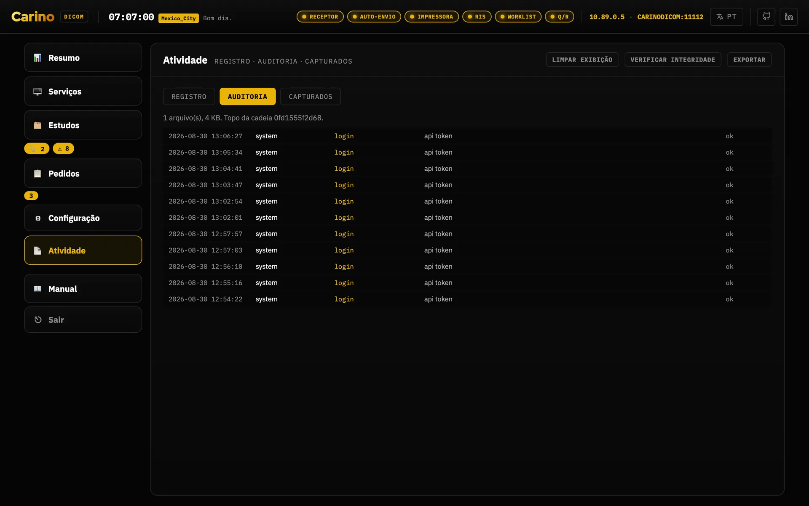
4. Os serviços, um a um
Tudo o que abre uma porta vem desligado. A pergunta certa não é «o que ele consegue fazer?», e sim «o que esta máquina precisa fazer?». Cada serviço ligado é mais uma porta aberta. O índice abaixo é a única exceção: ele sobe sozinho, porque é um cache sqlite local que não abre porta nenhuma.
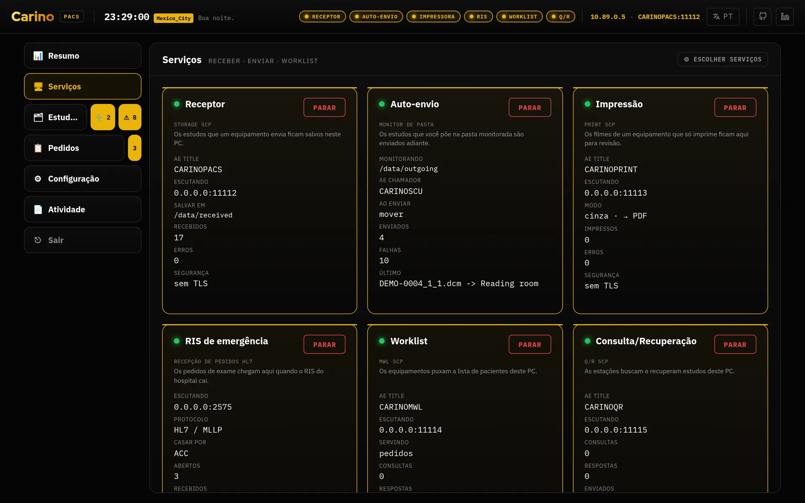
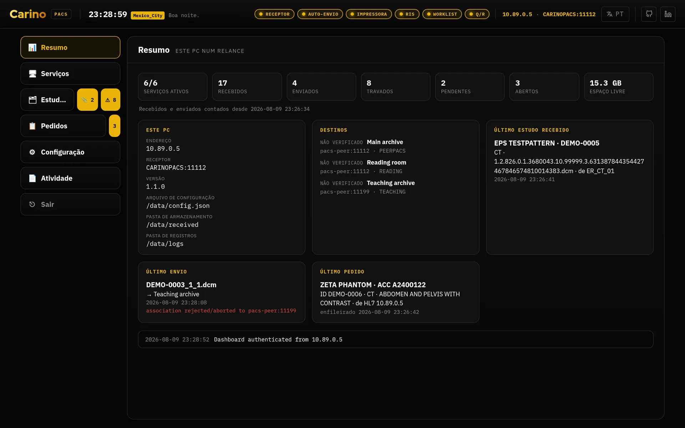
Receptor — Storage SCP
Porta 11112 · C-STORE, C-ECHO
- O que faz
- Aceita estudos enviados pelas modalidades e grava em disco, opcionalmente organizados por Paciente / Estudo / Série. Aceita todas as sintaxes de transferência e guarda o que vem comprimido como está: não há transcodificação, então nenhum dado é alterado na entrada.
- Quando ligar
- Sempre que algo precisar enviar imagens para cá: modalidades, outro PACS, uma estação. É o serviço central.
- Quando não
- Se esta máquina só encaminha o que outra deixa numa pasta.
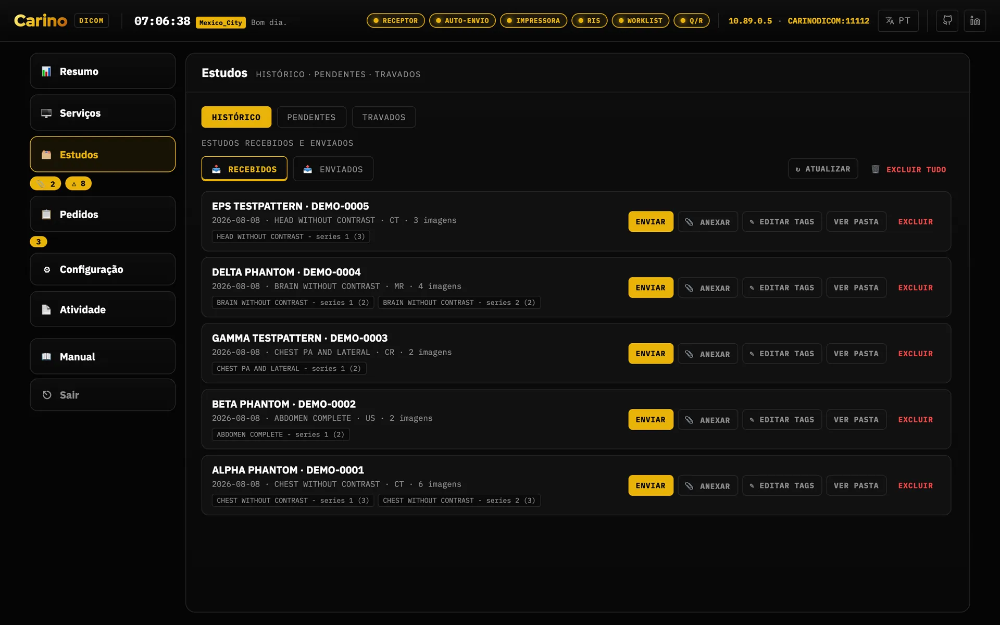
Encaminhamento automático — Storage SCU e regras de roteamento
Cliente de saída · C-STORE
- O que faz
- Monitora uma pasta e encaminha cada arquivo novo para os destinos que couberem. Um arquivo só é enviado quando está estável (o tamanho não mudou entre duas varreduras), então nunca se encaminha arquivo pela metade. O progresso é registrado por destino: só conta como concluído quando todos os destinos habilitados aceitaram, e os que falharam são repetidos na varredura seguinte. Ao concluir, o original pode ser mantido, movido ou excluído.
- Regras
- Com roteamento ligado, uma regra decide os destinos por modalidade, AE title de origem,
estação, ID do paciente ou descrição do estudo (curingas
*e?, sem diferenciar maiúsculas). Exemplo: TC vinda deER_*para o arquivo de ensino, anonimizada. - A garantia
- Um estudo nunca pode ficar sem destino. Se o roteamento estiver desligado, se nenhuma regra casar, se o cabeçalho não puder ser lido ou se uma regra citar um destino que não existe mais, o arquivo vai para todos os destinos habilitados. Enviar demais incomoda o operador; enviar de menos perde uma imagem.
- A única exceção
- Uma regra que pede anonimização para um destino, quando a limpeza não pode de fato ser
feita, deixa aquele destino retido: nada é enviado a ele, em vez de mandar o
estudo identificado. Duas coisas impedem a limpeza — o perfil estar em
off, ou o perfil estar ligado e nenhum anonimizador poder ser construído com as configurações atuais — e elas se resolvem de maneiras diferentes. Nos dois casos nada se perde; veja Anonimização no encaminhamento abaixo. - Quando ligar
- Quando esta máquina tiver que entregar imagens a outro sistema: encaminhar ao PACS central, alimentar uma estação de laudo, mandar cópias para um arquivo de ensino.
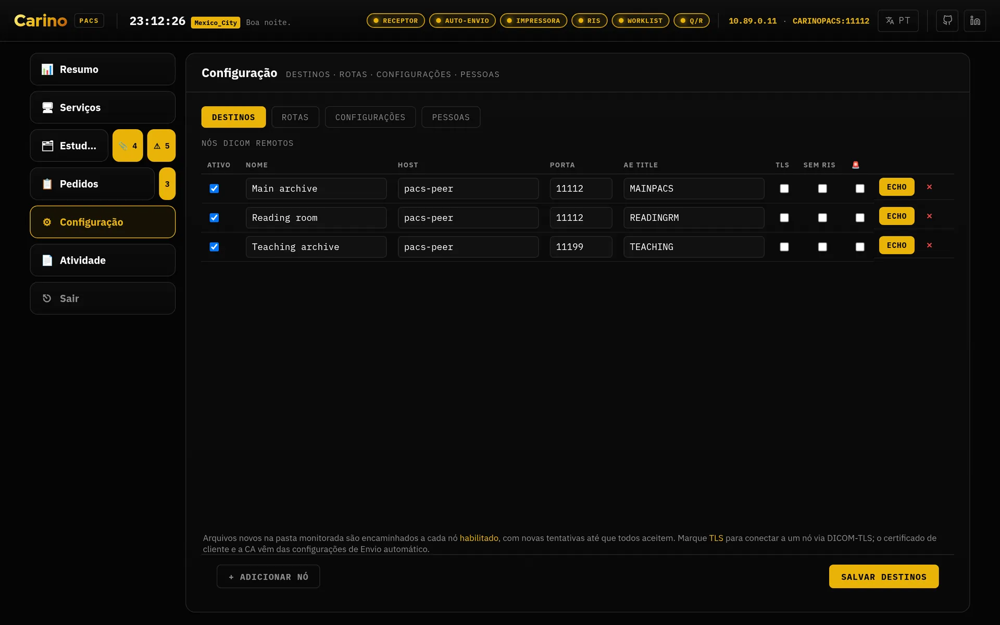
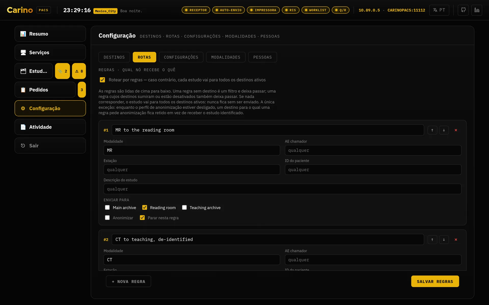
![A aba Travados de Estudos, com um aviso de que há arquivos precisando de atenção e duas seções. «Tentando automaticamente»: uma linha do Teaching archive com duas instâncias aguardando, uma linha vermelha com o último erro, um botão «Tentar agora» e a contagem para a próxima tentativa. «Retido — nada está sendo enviado»: uma linha do Main archive marcada «perfil desligado», três instâncias aguardando, os nomes dos três arquivos .dcm, o parágrafo que nomeia as edições que os liberam e dois botões, «Configurações de anonimização» e «A regra que pede isso».](../img/pt-BR/stuck.webp)
A aba tem ainda uma terceira seção, Sem destino para tentar, que esta captura não mostra porque este equipamento não tem nenhum caso: são os arquivos encaminhados a um nome que deixou de ser um destino habilitado — apagado ou desligado na aba Destinos depois de a rota já ter sido decidida. Não sobrou nó para discar, então nada os tenta de novo e nenhum relógio corre a favor deles; o remédio também é outro, restaurar um destino com o mesmo nome. Cada linha diz o que será dos arquivos, e a distinção importa: uma cópia que a retenção e encaminhamento já prometeu àquele nó espera indefinidamente na pasta de saída, sem ser arquivada nem apagada, enquanto uma que ninguém prometeu é reencaminhada na varredura seguinte sem aquele nome e então arquivada ou apagada conforme o seu Ao enviar, sem nunca ter chegado lá — restaurar o nó só ajuda antes dessa varredura.
Anonimização no encaminhamento
Perfil PS3.15 Anexo E · aplicado só à cópia que sai
- O que faz
- Aplica o Basic Application Level Confidentiality Profile ao objeto enviado,
declarando em
(0012,0064)exatamente quais opções de retenção foram usadas, para que quem recebe possa conferir o que foi mantido. O original arquivado nunca é reescrito: essa assimetria é a ideia inteira. - Perfis
basicmantém datas (completas ou deslocadas), características do paciente, identidade do equipamento e da instituição.strictremove identidade de equipamento e instituição e apaga atributos privados mesmo que você peça para manter.- Quando ligar
- Quando as imagens saírem do ambiente clínico: ensino, pesquisa, um fornecedor, uma segunda opinião externa.
- Ao desligar
- O perfil decide se alguma limpeza acontece; a marcação anonimizar de uma regra
decide quais destinos recebem a cópia limpa. Se você puser o perfil em
offenquanto uma regra continua pedindo, o Carino retém aquele destino em vez de mandar uma cópia identificada para um nó cujo responsável acredita não receber nenhuma.
Retido, não enviado — e é esta a resposta quando os estudos param de andar. Um destino que uma regra marca como anonimizar não recebe nada sempre que a limpeza não puder de fato ser feita. A entrega é adiada, a identidade não é revelada: um estudo esperando em disco se libera com uma edição, enquanto um nome que já chegou a um nó externo não se recupera com edição nenhuma.
Há dois motivos para a limpeza não acontecer, e eles não se resolvem do mesmo jeito. Cada retenção registra qual dos dois é, e a aba Travados imprime o remédio do motivo registrado em vez de adivinhá-lo:
- O perfil está em
offenquanto uma regra continua pedindo a limpeza. Ponha o perfil embasicoustricte a próxima varredura do encaminhamento automático os libera. - O perfil está ligado, mas nenhum anonimizador pôde ser construído com as configurações atuais, então continua não havendo com o que limpar. A falha que impediu isso está na aba Registro de Atividade, no canal de envio — corrija ali. Desligar o perfil não libera esta retenção: não libera nada, só muda qual das duas metades está impedindo a limpeza.
Os dois lugares onde a retenção se solta ficam a um clique da própria linha: ela traz dois botões, Configurações de anonimização, que abre a aba Configurações, onde fica o perfil, e A regra que pede isso, que abre a aba Rotas. Os dois abrem a aba e param aí: nenhum rola até a regra nem a destaca, então a regra você ainda procura na lista. Antes de Configuração ser uma linha só, chegar aos dois era procurar painéis na lateral; agora o conserto é ler a retenção e clicar.
Desmarcar anonimizar na regra libera qualquer uma das duas retenções, e as libera identificadas — exatamente o desfecho que a retenção existe para impedir. Faça essa edição só se aquele destino realmente não deve mais receber dados anonimizados.
Nada se perde e nada disso é silencioso. Os estudos ficam na pasta de saída — nunca são arquivados nem apagados —, os demais destinos do mesmo estudo continuam recebendo, a aba Registro levanta um erro nomeando o estudo, o destino retido e o motivo, o bloco de anonimização da aba Configurações também o nomeia, e o contador ⚠ ao lado da linha Estudos inclui esses arquivos — e esse contador é um botão que abre a aba Travados direto. Nada libera uma retenção sozinho: nenhum temporizador a esgota e nada a tenta de novo.
Não limpa os pixels. Os dados do paciente gravados na imagem — a tarja que um ultrassom ou uma captura secundária imprime dentro do quadro — sobrevivem a todos os perfis, e são a forma mais comum de dados «anonimizados» saírem do hospital com nome e sobrenome. A opção Clean Pixel Data (113101) não é declarada de propósito, porque não é feita. Nada dentro do programa detecta esse vazamento por você: alguém precisa olhar as imagens. Texto livre dentro de laudos estruturados também não é analisado.
Índice
sqlite · index.db
- O que faz
- Mantém uma linha por arquivo armazenado e deriva dali as respostas de paciente, estudo e série, para que o resumo de um estudo nunca fique fora de sincronia com as instâncias que ele resume. É a camada de consulta por baixo do Query/Retrieve e do DICOMweb.
- Quando ligar
- Sempre que usar Query/Retrieve ou DICOMweb. É a única dependência dos dois.
- O que ele garante
- O índice é cache, nunca a fonte da verdade. Perdê-lo custa uma nova varredura, nunca uma imagem.
Query/Retrieve — C-FIND, C-MOVE, C-GET
Porta 11115 · Patient Root e Study Root
- O que faz
- Permite que outro sistema pergunte «quais estudos você tem deste paciente?» e depois «manda para mim / para aquela estação». É a metade do PACS com a qual o equipamento antigo consegue conversar: um ultrassom de 2009 ou um digitalizador de CR nunca vão falar DICOMweb, mas falam DIMSE.
- Quando ligar
- Quando estações ou modalidades precisarem puxar estudos daqui, ou quando você estiver servindo de arquivo temporário durante uma queda do PACS principal.
- O que ele garante
- Um C-MOVE nunca inventa a lista de instâncias: resolve pelo índice. O que o índice conhece mas não pode ser lido do disco é contado como sub-operação falha e nomeado na lista de UIDs que falharam. Nunca é descontado em silêncio: um C-MOVE que reporta sucesso enviando menos imagens do que encontrou é a pior falha possível deste software.
DICOMweb — QIDO-RS, WADO-RS, STOW-RS
HTTP, sob /dicom-web na porta do painel
- O que faz
- Deixa visualizadores modernos (OHIF, Weasis e afins) consultarem, baixarem e enviarem estudos por HTTP sem negociar uma associação DICOM. O que entra por STOW-RS passa pelo mesmo arquivamento de um C-STORE, então um estudo enviado por um visualizador é indistinguível de um enviado por uma modalidade.
- Quando ligar
- Quando quiser plugar um visualizador web no acervo. Lembre que o token também protege essas rotas.
- CORS
cors_originsé comparado de forma exata (esquema + host + porta) e vem vazio, então nada é devolvido a uma origem que não esteja na lista. Não há sintaxe de curinga, mas um*literal é respeitado, e só porque você o digitou: dali em diante toda origem é refletida e qualquer página que o operador visite poderia ler o acervo desta máquina. Prefira nomear o visualizador.- O que ele não faz
/rendered,/thumbnail, URIs de bulkdata e conversão entre sintaxes de transferência não estão implementados e respondem406. Um visualizador pela metade é pior que um recurso ausente: o que não pode ser produzido não é fingido.
Modality Worklist (MWL)
Porta 11114 · C-FIND de worklist
- O que faz
- Serve os pedidos às modalidades para o técnico não digitar os dados do paciente à mão. Cada pedido carrega um Study Instance UID pré-gerado que é gravado no exame, de modo que o estudo devolvido pela modalidade concilia exatamente com o pedido. O campo AE de destino direciona um pedido para uma estação específica; em branco, todas enxergam.
- Quando ligar
- Quando o RIS não chega até as modalidades: porque caiu, porque o destino simplesmente não tem RIS, ou para testar um fluxo RIS→PACS sem um RIS de verdade.
RIS de emergência — pedidos HL7
Porta 2575 · HL7 ORM^O01 sobre MLLP
- O que faz
- Recebe pedidos HL7 por MLLP e também permite digitá-los à mão no painel quando não sobrou nada vivo do lado de cima. Quando o estudo volta por C-STORE, ele é conciliado com o pedido pelo accession number (com o ID do paciente como reserva) e o pedido é fechado e arquivado para a trilha — nunca apagado.
- Quando ligar
- Durante uma queda do RIS, ou em testes de integração.
- O que ele garante
- A entrega das imagens nunca depende de existir um pedido. Um estudo sem pedido correspondente é armazenado e encaminhado do mesmo jeito; o pedido apenas fica em aberto para conciliação manual.
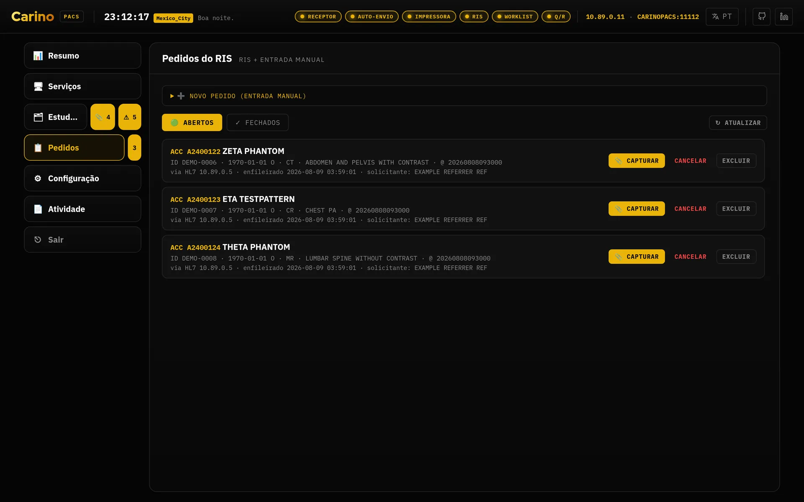
Sem TLS e sem credencial. Veja a seção de segurança: quem conseguir abrir um socket nessa porta consegue injetar pedidos. Só em rede clínica confiável e com firewall.
Failover de emergência
Vigilância por C-ECHO do PACS marcado como principal
- O que faz
- Marque um destino como principal e arme o monitor: o Carino faz C-ECHO periodicamente e observa as falhas de encaminhamento. Se ele seguir inalcançável além do limite, você recebe o aviso e a oferta de ativar o RIS de emergência. Ao ativar, sobe a worklist local para os técnicos continuarem examinando, segura o que chega durante a queda e encaminha automaticamente quando o principal volta. Você decide quando voltar ao normal.
- Quando ligar
- Na máquina que faz de gateway para um PACS do qual você depende. É por isso que a palavra «continuidade» aparece na primeira linha deste manual.
Impressão virtual
Porta 11113 · DICOM Print, saída em PDF
- O que faz
- Se apresenta como uma impressora DICOM e captura em PDF o que mandarem. Para equipamentos cuja única saída é o filme, é a forma de guardar algo arquivável.
- Quando ligar
- Quando você tiver uma modalidade que só sabe imprimir e quiser resgatar o resultado dela.
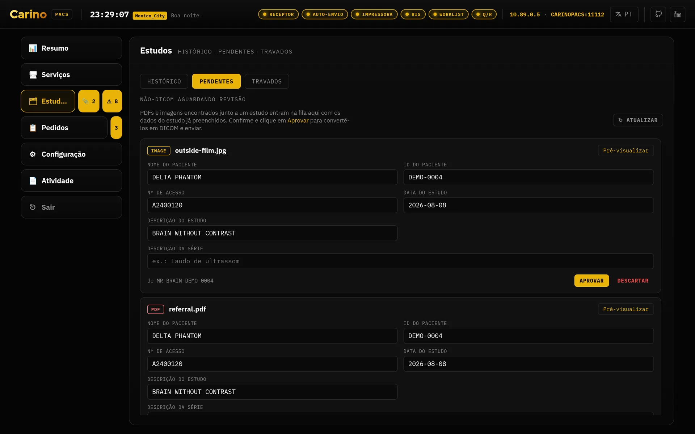
Painel web
Porta 8042 · HTTP, 127.0.0.1 por padrão
- O que faz
- Estado de cada serviço, destinos, pedidos, registro de atividade ao vivo, configurações e um editor DICOM embutido. Tudo o que o painel faz também existe na CLI.
- Como se navega
- A lateral tem seis linhas: Resumo, Serviços, Estudos,
Pedidos, Configuração e Atividade. As três perguntas que se fazem
sobre o mesmo monte de arquivos são as abas de Estudos — Histórico,
Pendentes e Travados; o que se ajusta ao comissionar o equipamento são as abas de
Configuração — Destinos, Rotas, Configurações e
Pessoas, e ela abre em Destinos, não em Configurações; e os dois
registros são as abas de Atividade — Registro e Auditoria.
Pedidos mantém a própria faixa de abertos e fechados. A linha Estudos carrega
dois contadores que são botões, 📎 pendentes e ⚠ travados, e cada um abre a sua aba direto, então
chegar aos travados é um clique enquanto houver algo travado: um contador em zero fica
escondido, porque um contador que marca 0 é um alarme sempre ligado, e sem ele o caminho é o de
sempre — a linha, depois a aba, dois cliques. Pedidos tem o seu próprio contador. Cada
painel e cada aba tem endereço na URL —
#studies/stuck,#configuration/routing,#activity/logs—, então um lugar do painel pode ir para os favoritos e ser ditado por telefone durante uma queda, que é por que esses endereços são palavras e não ids de elemento; o botão «voltar» do navegador funciona e os endereços antigos no estilo#dlgStuckcontinuam resolvendo. Resumo é a exceção: ele atende por#overviewse você digitar, mas nunca é escrito na barra de endereços nem deixa entrada no histórico, porque imprime o nome de um paciente e uma tela sem ninguém na frente não pode voltar sozinha para ele depois de um recarregamento. - Os chips do cabeçalho
- Os chips de serviço no alto continuam iguais para quem pode iniciar e parar serviços. Um perfil que não pode continua enxergando-os como indicadores, mas desabilitados: o estado de um serviço não é informação privilegiada, e a recepção precisa ver um receptor morto sem receber um interruptor que o servidor recusaria.
- Quando tirar do loopback
- Só com um motivo concreto — e então com token obrigatório e HTTPS na frente. Veja a regra do token.
![A aba Configurações de Configuração, com seus doze blocos em três colunas numa tela larga: o AE title do receptor, o endereço de escuta, a porta, a pasta de armazenamento, o mínimo de espaço livre, a lista de AE permitidos e os campos TLS; o AE chamador do envio automático, a pasta vigiada, o intervalo de varredura, o que fazer depois de enviar um arquivo e as configurações de confiança TLS; e ao lado os blocos de impressão, failover de emergência, Modality Worklist, RIS de emergência, Consulta/Recuperação, DICOMweb, índice de instâncias, anonimização, acesso à API e integrações.](../img/pt-BR/settings.webp)
config.json, em um formulário. O arquivo continua sendo a fonte da verdade: editar aqui o escreve, e uma configuração que o painel se recusaria a salvar é recusada com o motivo, não reescrita em silêncio.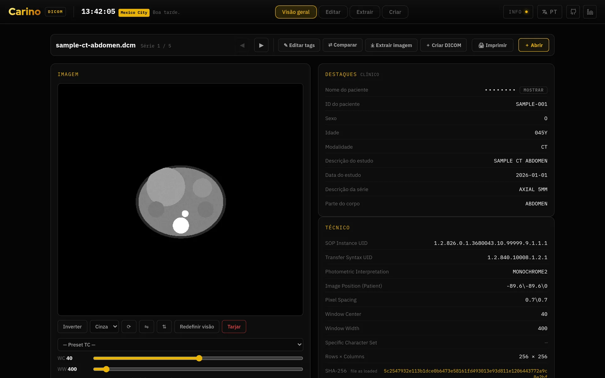
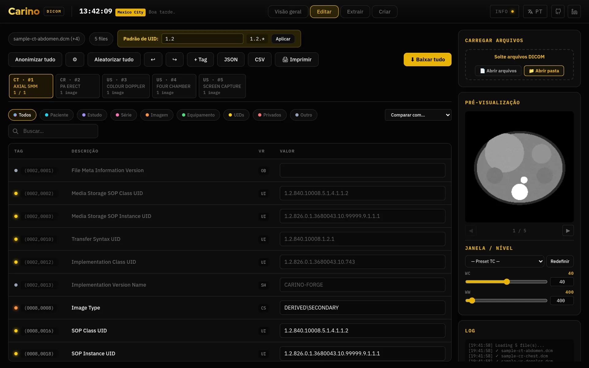
5. Isto não é um dispositivo médico
O Carino PACS não é um dispositivo médico. Não tem certificação, autorização nem registro em nenhuma autoridade regulatória, em país nenhum. Não tem registro na ANVISA, não tem marcação CE como dispositivo médico, não tem autorização da FDA nem de nenhum órgão equivalente. Ninguém executou sobre ele uma validação para uso clínico.
Não serve para diagnóstico primário. Aqui não há visualizador diagnóstico: sem janelamento, sem medições, sem cadeia de renderização calibrada, sem controle do monitor em que a imagem aparece. Faça o laudo na estação de trabalho validada que você já tem.
Dito sem rodeios, porque é mais útil que uma nota de rodapé:
- Se você implanta, a validação é sua. A conformidade regulatória, a análise de risco, a proteção de dados (LGPD) e a responsabilidade clínica são da organização que coloca o software em produção, não do projeto.
- É distribuído sem garantia de espécie alguma, como diz a licença AGPL-3.0.
- Não substitui seu PACS nem seu RIS. É o gateway entre os dois e o que mantém o setor funcionando durante uma queda, até que voltem.
- Trate como infraestrutura clínica assim mesmo. Não ser dispositivo médico não o torna inofensivo: ele movimenta dados de pacientes. Criptografia do volume, firewall, TLS, token e backup não são opcionais.
- Se o cuidado de um paciente depender disto, a responsabilidade é sua, não do software.
Nada disso é pessimismo: o projeto leva a sério que uma imagem que nunca chega em silêncio é pior que uma falha barulhenta, e por isso prefere se recusar a iniciar, contar explicitamente as sub-operações que falharam e encaminhar demais em vez de encaminhar de menos. Ele segura uma entrega em um único caso, de forma barulhenta e reversível: um destino para o qual uma regra pede anonimização quando a limpeza prometida não pode ser feita, seja porque o perfil está desligado, seja porque o perfil está ligado e nenhum anonimizador pôde ser construído. Ele diz qual dos dois é, porque os dois se resolvem de maneiras diferentes. Mas o software só responde pelo que ele faz; pelo resto, quem responde é você.
6. Licença e onde pedir ajuda
O Carino PACS é publicado sob AGPL-3.0-or-later. Como é um servidor de rede, vale
o §13: se você roda uma versão modificada como serviço, precisa oferecer o código dela a quem a
usa. Mantenha o arquivo LICENSE e um ponteiro para o código junto de qualquer
implantação modificada.
- Código e issues no GitHub
- Política de segurança — o que está protegido, o que não está e como reportar uma vulnerabilidade
- Como contribuir
Se você achar um erro neste manual — ou uma tradução que um radiologista nunca diria — abra uma issue. A documentação em português e espanhol é parte do projeto, não um extra.
Carino PACS · página inicial · parte da oficina carino.systems · AGPL-3.0-or-later.